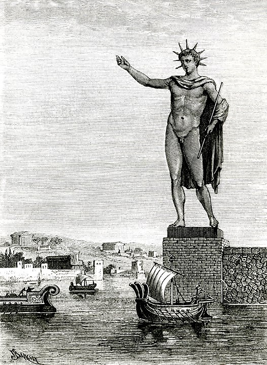

 Після швидкої смерті Александра Македонського у 323 році до н. е. відсутність єдиного спадкоємця престолу породила численні міжусобні війни між його полководцями. Урешті-решт, імперія розпалася на чотири частини, а Родос відділився та увійшов у союз із Птолемеєм Сотером, тодішнім завойовником Єгипту. Союз контролював значну частину торгових шляхів у східному Середземномор'ї, включно із виходом до Егейського моря. У 305 році до н. е. військо Антигона Одноокого, повелителя на чолі з його сином, Деметрієм І, «завойовником міст», узяло в облогу Родос з армією чисельністю 40 000 чоловік. Проте місто було добре укріплене, і Деметрію довелося будувати високі облогові вежі, щоб дістатись на мури міста. Погані погодні умови, хитрість та запеклий опір родосців ніяк не сприяли завоюванню міста. У 304 році до н. е. Птолемей відправив свій флот на допомогу місту і Деметрію довелось поспішно відступити, залишивши майже все військове обладнання. Щоб відсвяткувати перемогу, родосці продали військові трофеї за 300 талантів і на виручені гроші вирішили збудувати грандіозну статую своєму заступнику, богу Сонця Геліосу. храмі.